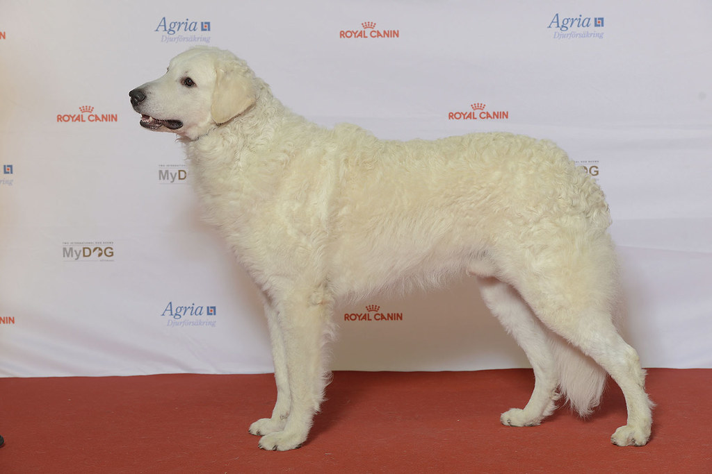

| Kutya fajták | Erdélyi kopó | Komondor | Kuvasz | Magyar vizsla | Mudi | Puli | Pumi |
|---|

Megjelenése tetszetős, nemességet, erőt, bátorságot sugároz. Magas, nagy termetű kutya, általában 70 centiméter marmagasságú. Szőrzete fehér vagy elefántcsont színű, enyhén hullámos lefutású, jellegzetes kuvasz-szőrzet. Ellentétben a komondorral, nyáron leváltja szőrtakaróját, vedlik. A világos színű bunda követelmény volt, hiszen az elsősorban esti szürkületkor támadó ragadozóktól így jól megkülönböztethette gazdája a kutyáját. De egyes források szerint a kuvasz egykor nemcsak fehér, hanem vörhenyes, sárgás, sőt, ordas színben is létezett, de sohasem volt tarka. A törzskönyvbe azonban már csak a fehér egyedeket vették fel. Bőre sötét pigmentű. Testalkata arányos, izmos teste küzdőképességről tanúskodik. Csontozata erős, de sohasem durva. Mozgása elegáns, tértölelő. Feje rendkívül nemes, számos fajtabélyeget hordoz, mely jellemzőkkel biztosan megkülönböztethető a rokon fajtáktól. A füle V-alakú, lehajló. Mandulavágású, ferde szeme értelmes és hűséget mutat. Kiváló szimatú.
Bátor, kitűnő őrző-védő fajta. Idegenekkel szemben alapvetően bizalmatlan. Fiatal korában könnyen nevelhető, kétéves kor felett már nehezebben idomul. A kuvasznak feladata ellátásához jó szimatra, bátorságra, erőre és támadó kedvre volt szüksége. Különleges jelleme, az évezredek óta génjeiben hordozott szabadságszeretete, nagy fokú önállósága mindenképpen kutyához értő, következetes gazdát követel. Ne is vállalkozzon tartására az, aki nem tud számára elegendő nagyságú szabad területet biztosítani, ahol mozgásigényét, elsőrangú őrző-védő adottságát kiélheti.
A kuvasz okos, intelligens kutya. Kellő mennyiségű és megfelelő nevelés és szocializáció után látványos, eredményes őrző-védő és ügyességi munka várható el tőle. Aki nem rest kutyájával rendszeresen foglalkozni, és gazdáját rajongásig szerető, tulajdonát mindhalálig védelmező, lenyűgöző szépségű kutyát szeretne, nem fog csalódni benne.